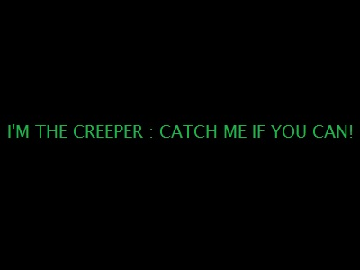
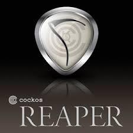

El origen de la Forja.
El primer virus considerado como tal del que se tiene registro fue creado en 1971 por Rob Thomas Morris, en BBN Technologies, su nombre era Creeper.
No fue creado en origen para causar daño, sino como una prueba de concepto, en el que se buscaba demostrar la posibilidad de que un programa pudiera replicarse y propagarse por una red. Creeper se propagaba a través de ARPANET el antepasado de nuestra actual Internet creada en 1969 por el Departamento de Defensa de Estados Unidos. Se replicaba en equipos DEC PDP-10. con sistema operativo TENEX, que era el principal en universidades y centros de investigación conectados a la red. Al infectar un sistema, Creeper mostraba el mensaje: "I'm the Creeper, catch me if you can!" para posteriormente eliminarse a si mismo del sistema infectado, y propagarse a otro equipo.

Aquí es donde comienza la historia del nombre de nuestra fragua.
El considerado como el primer antivirus, llamado Reaper (Segadora) se desarrolló como una respuesta a Creeper. Creado por Ray Tomlinson entre 1971 y 1972 con el propósito de buscar y eliminar el virus a través de ARPANET.